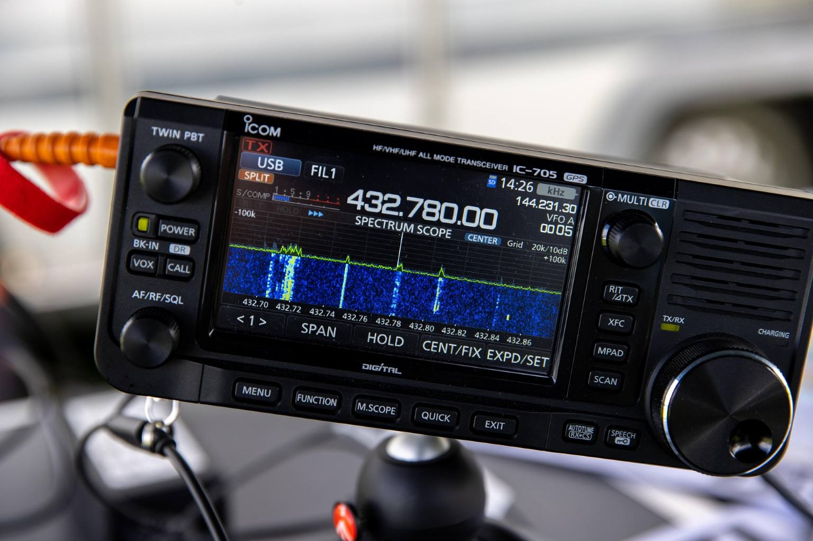
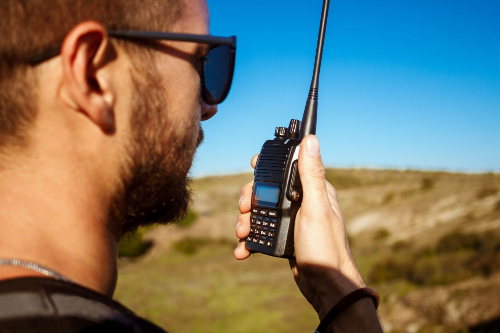

Welcome to the World of Amateur Radio!
What is Ham Radio?
Ham Radio, or Amateur Radio, is a hobby all about experimenting with radios and using them to communicate with others. It makes use of a set of radio frequencies set aside by federal regulations specifically for these users. Using radio waves, licensed amateur radio operators can communicate over short distances, long distances, across the world, and even to spacecraft like satellites and the ISS! Those that wish to be a part of this community are required to become licensed by passing a proctored test and adhere to various regulations. Check out further information about licensing requirements and the radio frequencies available to operators below!

What can I do with a Ham Radio?
Common uses of Ham radios include meeting and talking with others, testing new equipment, participating in contests, and emergency communication. The only real restrictions are that the ham radio frequencies can't be used for any kind of commercial purpose or transmitting music. Beyond that it's up to you!